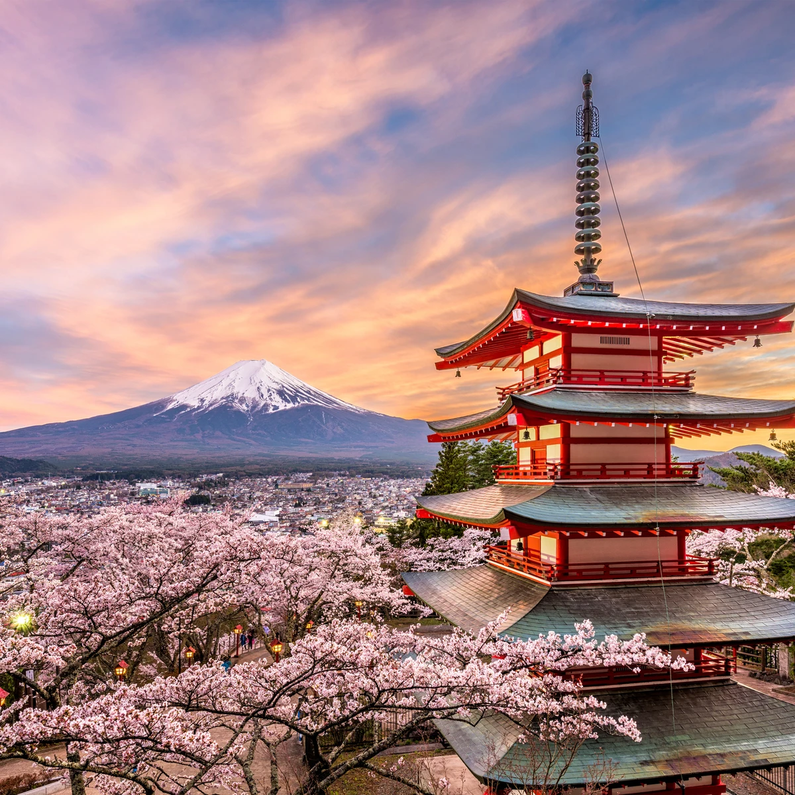
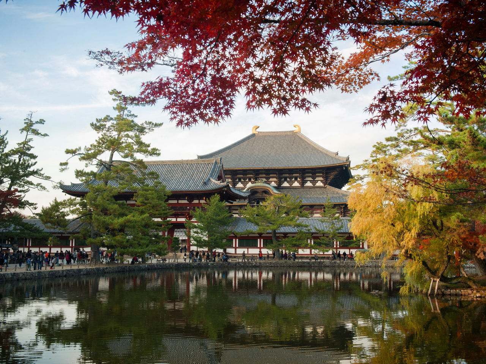
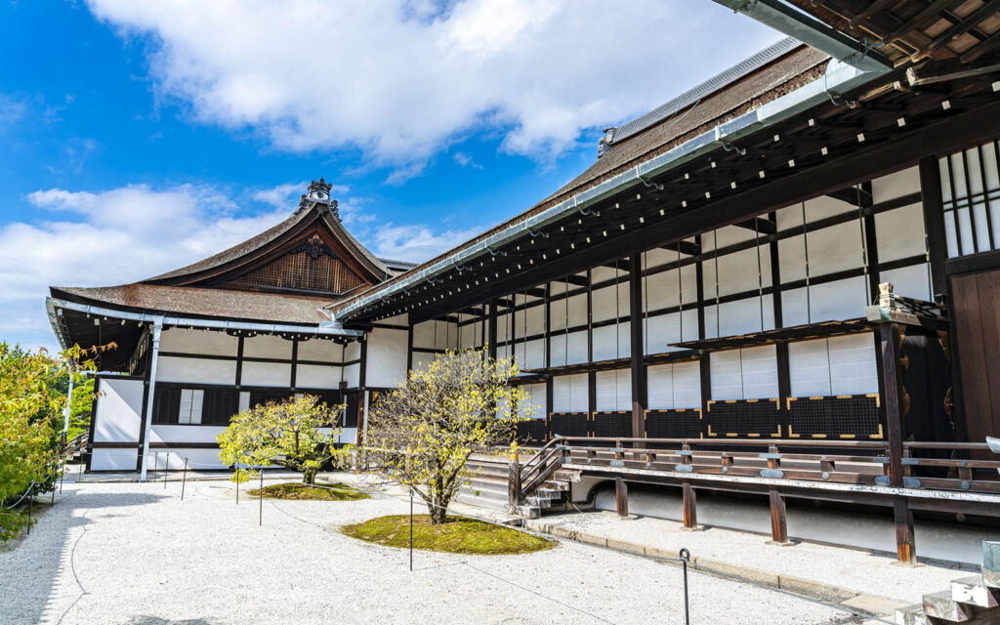
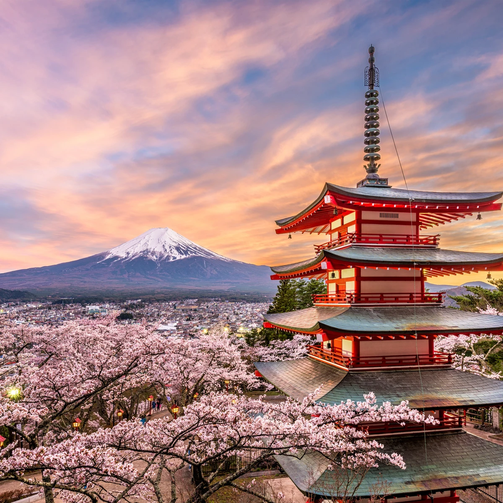
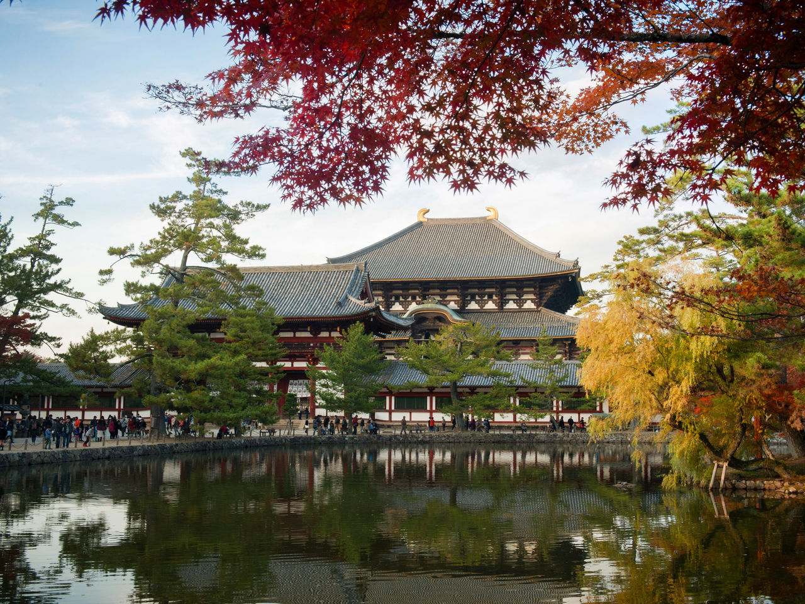
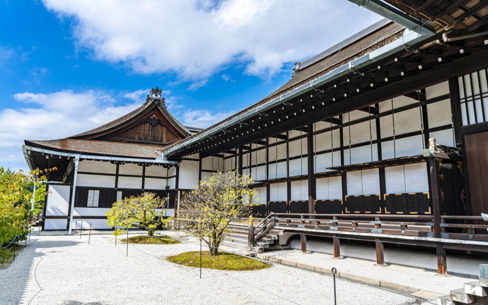

Galería de Imágenes


 





Lugares de Interés
Monte Fuji
Ubicación: Isla de Honshu
El símbolo más icónico de Japón, ideal para el senderismo.
Kyoto Imperial
Ubicación: Kioto
Templos antiguos y jardines zen que conservan la historia.
Dotonbori
Ubicación: Osaka
El corazón de la comida callejera y las luces de neón.
Nara Park
Ubicación: Nara
Famoso por sus ciervos amigables que pasean libres.
Mapa de la Ciudad
Noticias
Japón y Filipinas firman un nuevo pacto de defensa ante la creciente agresión de China
Japón y Filipinas firmaron este jueves un pacto de defensa que permitiría el suministro libre de impuestos de municiones, combustible, alimentos y otros artículos
Así fracasó el lanzamiento del satélite japonés Michibiki por una falla en el motor del cohete
El Ministerio de Educación y Ciencia de Japón confirmó el fracaso del lanzamiento del sexto satélite de geolocalización Michibiki
La verdadera razón detrás de la furia de China hacia Takaichi, primera ministra de Japón
A pocas semanas de asumir el cargo, la nueva líder de Japón se ha enfrentado a las consecuencias de cruzar la línea roja de China respecto a Taiwán
Así fue la boda entre una mujer y un chatbot: "Estar con una persona no me hacía sentir positiva"
Yurina Noguchi se casó con un personaje generado por IA llamado Klaus a través de ChatGPT. Aunque el matrimonio
Captan a un oso suelto frente a un museo en medio de ola de ataques en Japón
Un video de cámara de seguridad captó a un oso caminando frente a la entrada de un museo de arte en Sembroku, en el norte de Japón. Las autoridades